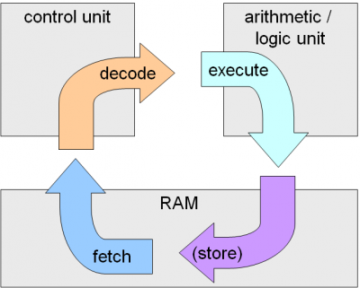

Brief defintion for the Machine cycle
A machine cycle consists of the steps that a computer's processor executes whenever it receives a machine language instruction.
It is the most basic CPU operation, and modern CPUs are able to perform millions of machine cycles per second.
The cycle consists of three standard steps: fetch, decode and execute.

The other related topics